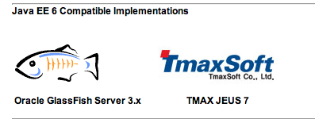

国外的企业级软件公司与互联网公司在机会和待遇上差别不大，国内落差这么大，市场应该会有纠错的，日后有可能出现互联网人才往传统企业回流的态势．

Ada李力
2011-04-11
Ada李力
2011-04-11
周末有人询问国内的几家应用服务器如何申请兼容性测试，说在网站上找不到。我找了找，也找不到。有人可能问，韩国的TmaxSoft怎么通过认证的？这家公司是JavaOne上的常客，代表会和JavaEE spec的制定人一起在讲台上回答问题。国内的厂商能做到这点吗？
@甲骨文Java社区:
目前通过JavaEE 6兼容性的应用服务器有两家。GlassFish 3.x和TmaxSoft (韩国）。 网页链接
网页链接
- 